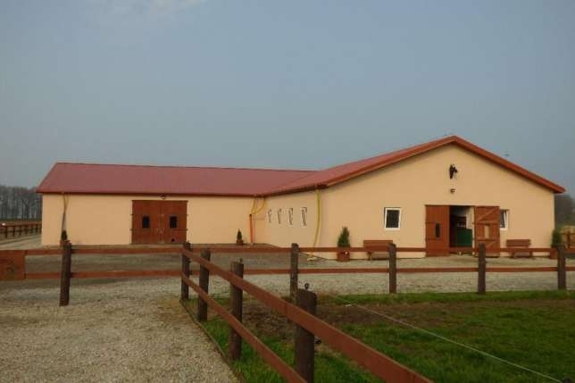
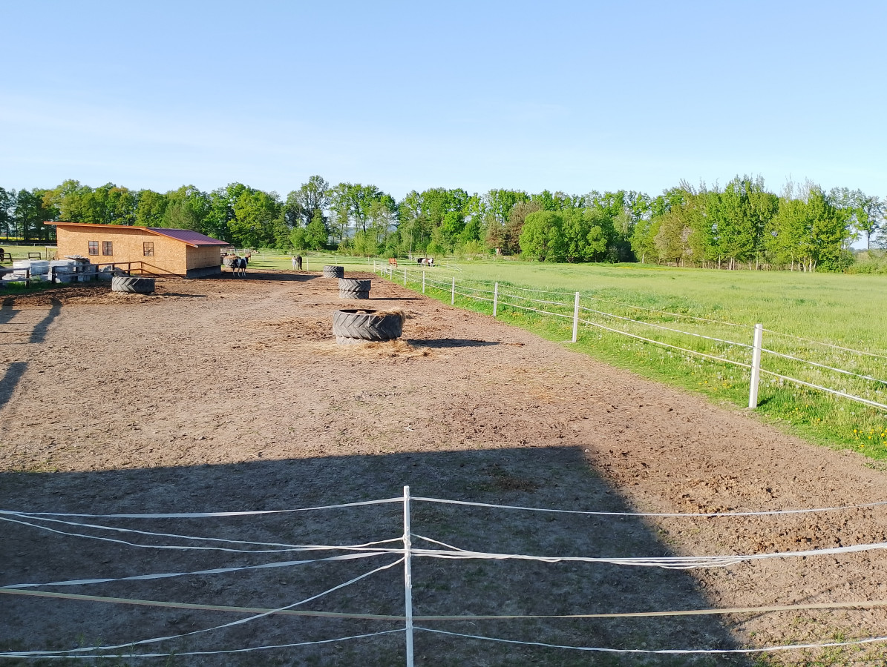
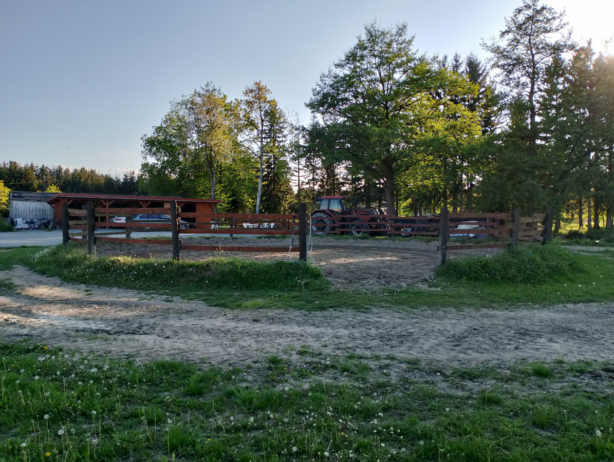

Położona w sercu malowniczych terenów Dolnego Śląska, Stajnia Piskorzów to jedna z nowocześniejszych i lepiej wyposażonych stajni w regionie. Znajduje się w spokojnej, wiejskiej miejscowości Piskorzów, niedaleko Pieszyc i Dzierżoniowa, na tle malowniczych łąk, pól i Gór Sowich.
To miejsce stworzone z pasji do koni – dla osób ceniących kontakt z naturą, wysoką jakość opieki nad zwierzętami oraz komfortowe warunki do rekreacji i treningu.
Właściciele koni mogą liczyć na pełną codzienną opiekę – karmienie paszą własnej produkcji (siano i owies), wypuszczanie na padoki, sprzątanie boksów i możliwość indywidualnych ustaleń.
Cena pensjonatu: ok. 900 zł/mies.
Spokój, cisza i kontakt z naturą – idealne warunki do wypoczynku z końmi. Stajnia słynie z kameralnej atmosfery i doskonałej opieki.
